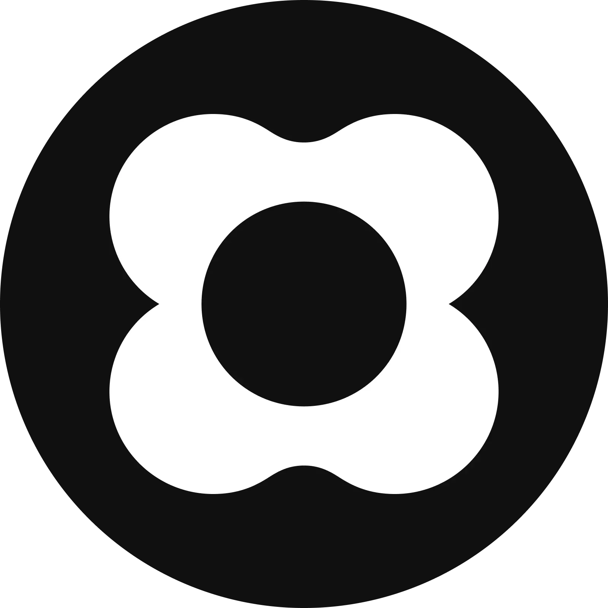
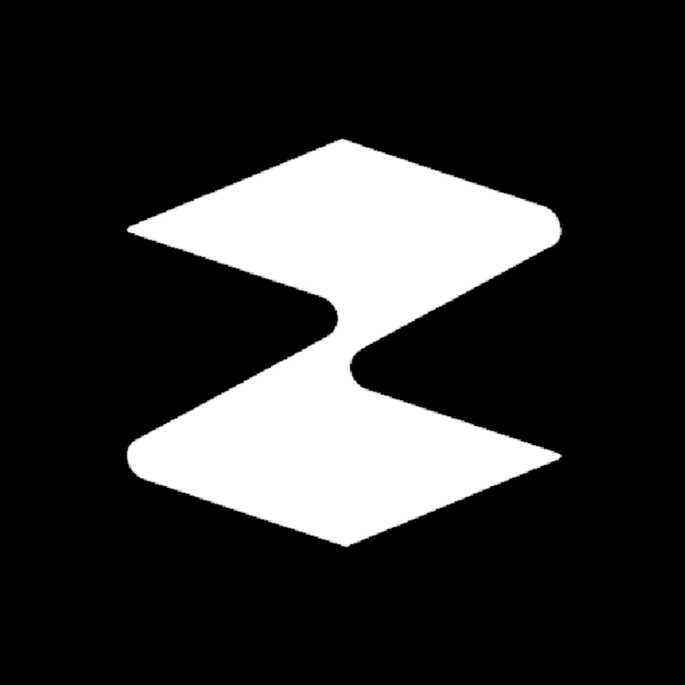
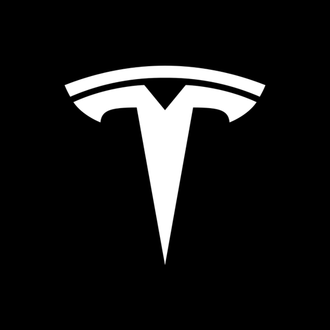
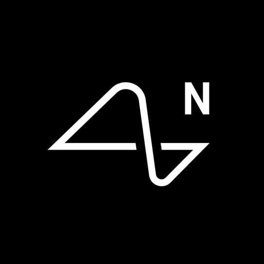
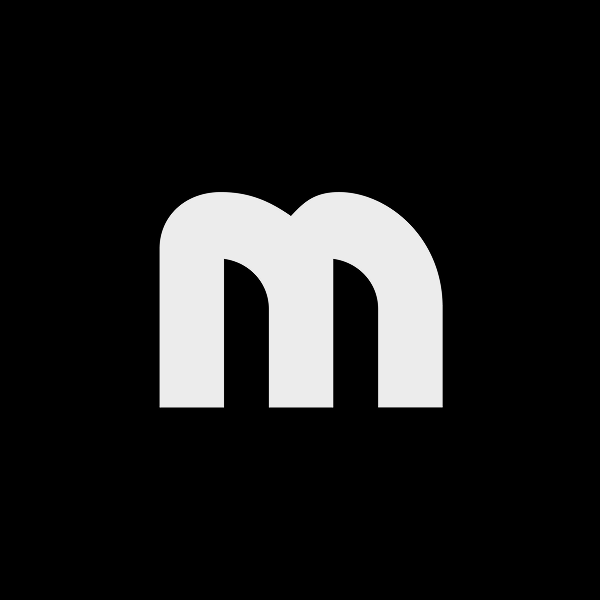
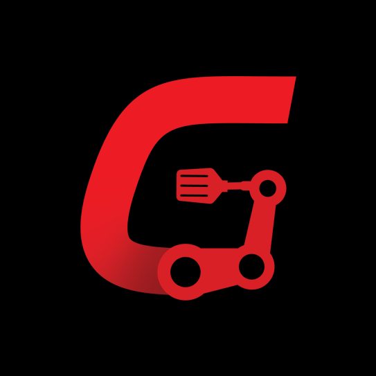
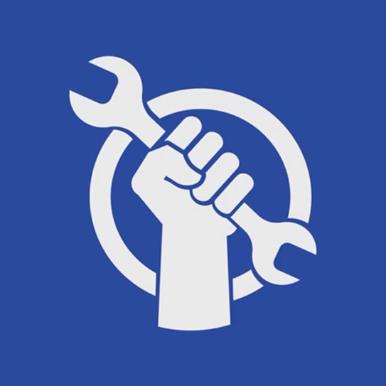

Hardware Lead
May 2024 - Present
At Sunday, we are building Memo - the first autonomous home robot. As the first hire, I was responsible for 4 generations of robot prototypes, and 3 generations of data collection devices. In 18 months we manufactured thousands of data collection devices, over a dozen robots, and collected over 10M episodes of data. Come and join us, we're hiring exceptional people.

Mechanical Engineering Internship
Apr 2023 - Aug 2023
During my internship at Zipline I worked on the Ground Systems team, working on how to integrate Docking stations with our client's stores and facilities. Owning the serviceability side of Shipper Integration, I developed a service cart to move Drones and Docks between client sites and maintenance facilities. I also worked on the Dock mounting system, allowing for them to be accurately positioned even while manually installing on uneven ground.

Mechanical Engineering Internship
Sep 2022 - Dec 2022
While working at Tesla I worked on almost every vehicle, but mostly focused on the Tesla Semi and Cybertruck. My biggest project was redesigning the Tesla Semi differential cover from stamped steel to an aluminum casting to improve sealing, NVH, and corrosion. I also designed test fixtures and plans to validate new castings and suppliers, before moving into mass production. Finally, I also worked on prototyping and designing new transmission breather concepts to enable higher lateral G scenarios on next-gen drive units.

Mechanical Engineering Internship
Jan 2022 - Apr 2022
I took ownership on 8 different projects, mainly focused around the implant charger, and the charging coil inside the implant. Most of my projects involved designing machines and equipment for manufacturing. I co-led a project to bring up manufacturing in a new location, with the capability to make units at 100X the current rate. I also led the development of a new internal charger for use in manufacturing and for charging animal implants, as well as preliminary design for the next N1 implant revision charging coil. Overall, I gained a ton of experience for designing things for scale, designing manufacturing equipment, and even laying out the manufacturing line itself.

Robotics Engineering Internship
May 2021 - Aug 2021
I took ownership on 5 different projects, focused on improving the functionality, reliability, and manufacturability of the robot. This included overhauling designs, integrating new sensors, and making the robot more reliable by life cycle testing components. I was also responsible for the first parts to transition from 3D printing to injection molding. I talked to suppliers directly, ran mold simulations, made drawings, and went through many rounds of DFM.

Mechatronics Engineer
May 2020 - Feb 2021
Gastronomous is a startup that wants to bring automation to the fast food industry. As the only full time engineer on the team, I got to do a lot of direct work on product development in the prototyping phase. I worked on many different projects, mostly pertaining to automating cooking appliances, integrating subsystems, and designing the kitchen of the future with new industrial technologies.
Mechatronics Engineering
Sep 2019 - Apr 2024
Following in the steps of many people I look up to, I joined Waterloo in the Mechatronics program. During my time at school I worked on the UWFSAE team, designing the suspension system for the 2021-2022 seasons.

Design Lead
Sep 2015 - Jun 2023
As the design lead in grade 11 and the captain in grade 12 I helped lead the team through many successful seasons. Now as a mentor I teach members skills that I have learned, and spread the core values of STEM. More details on the work that I did on Inverse Paradox can be seen in my projects section.
Middleschool
2011-2015
In middleschool I became obsessed with microcontrollers, starting with Arduino and then Raspberry Pi when it came out in 2012. I made tons of little gadgets, and handheld video games like Pong. I pooled together cash from Christmas and my Birthday to buy my first 3D printer in 2013. I made my own version of Google Glass in 2014 and got covered by Make, Time, and the Discovery Channel. I attempted to turn it into a company via a failed Kickstarter dubbed "AirGlass". The next year I worked on a custom full body exoskeleton using pneumatic McKibben muscles as actuators. I drained my bank account buying hardware and funded the remainder of the project with a Kickstarter.
Youngin
2010
Something in me has always wanted to create; to build. But when my grandfather got me a Popular Mechanics subscription and I started to read more I eventually found Make Magazine - a fantastic magazine of nerds and tinkerers alike. Promoted in one of their magazines was a textbook called Make: Electronics which taught me about the magical world of electrons. After that, my curiousity for engineering and science took off.